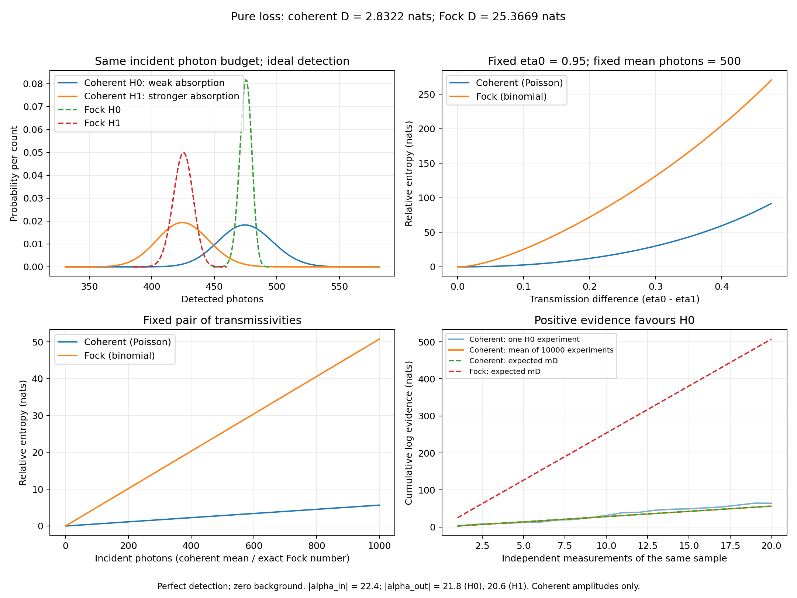
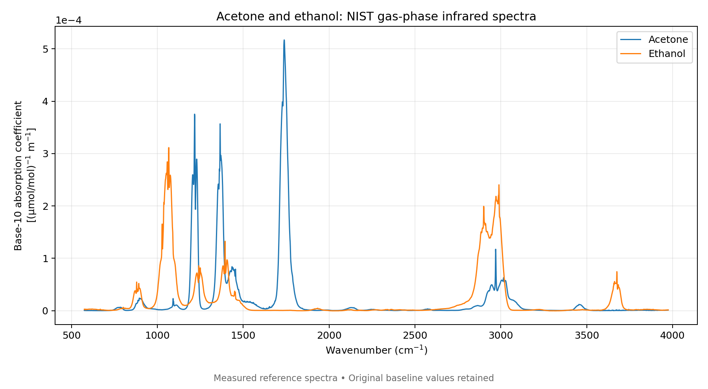
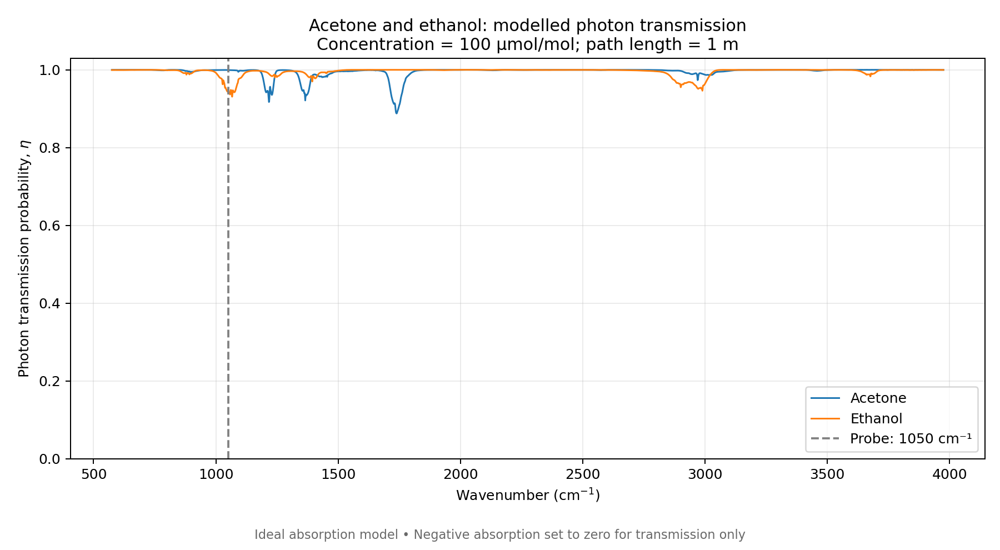
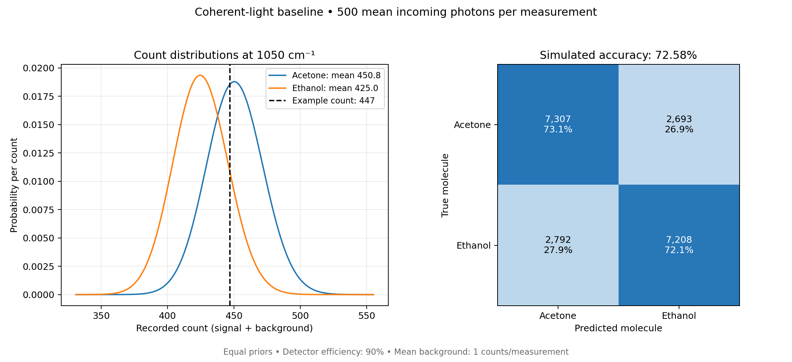
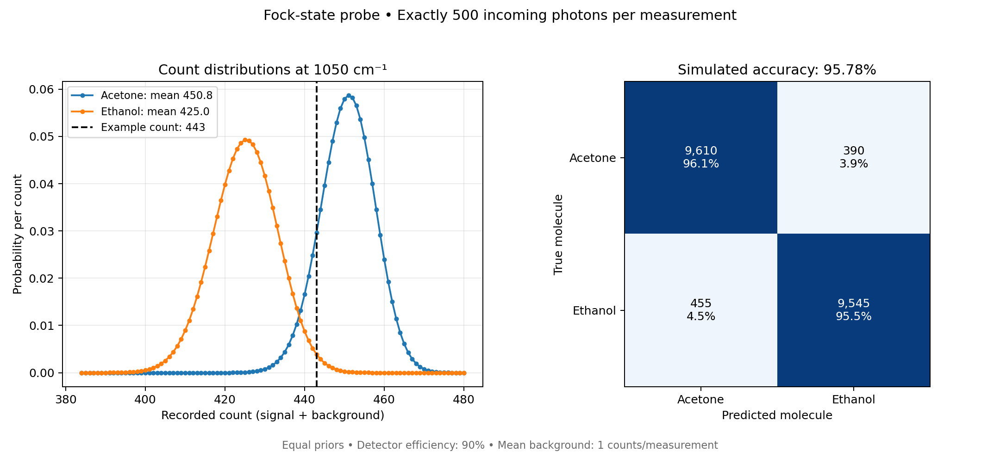
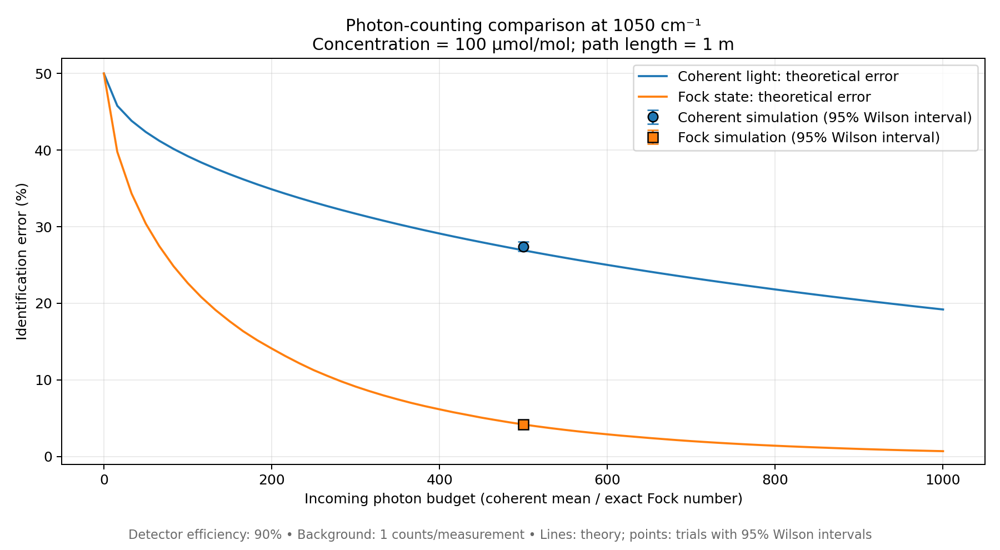
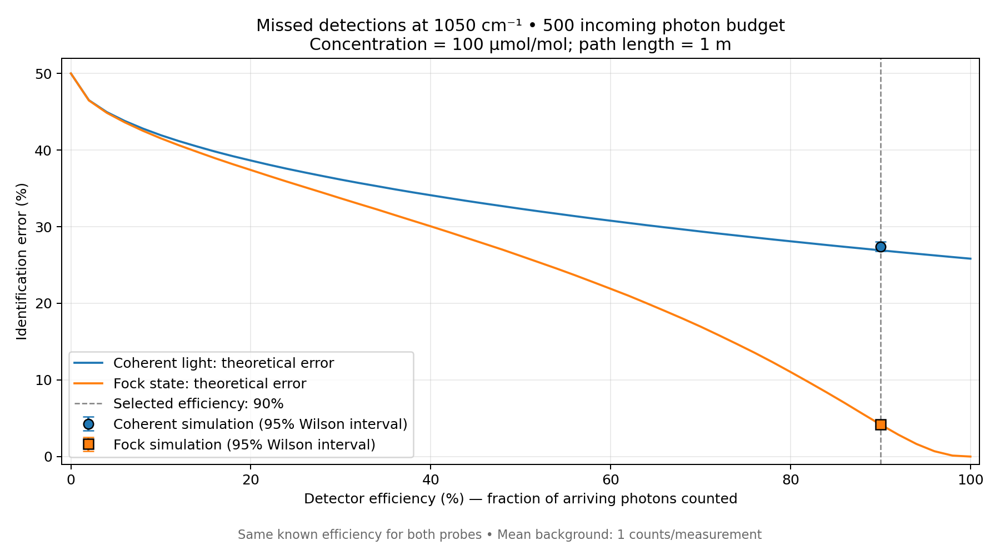
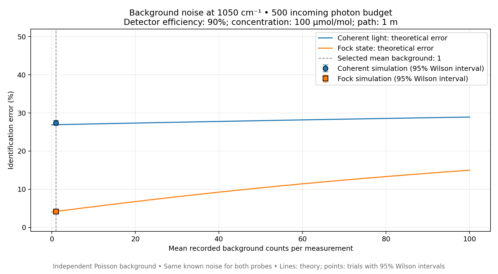
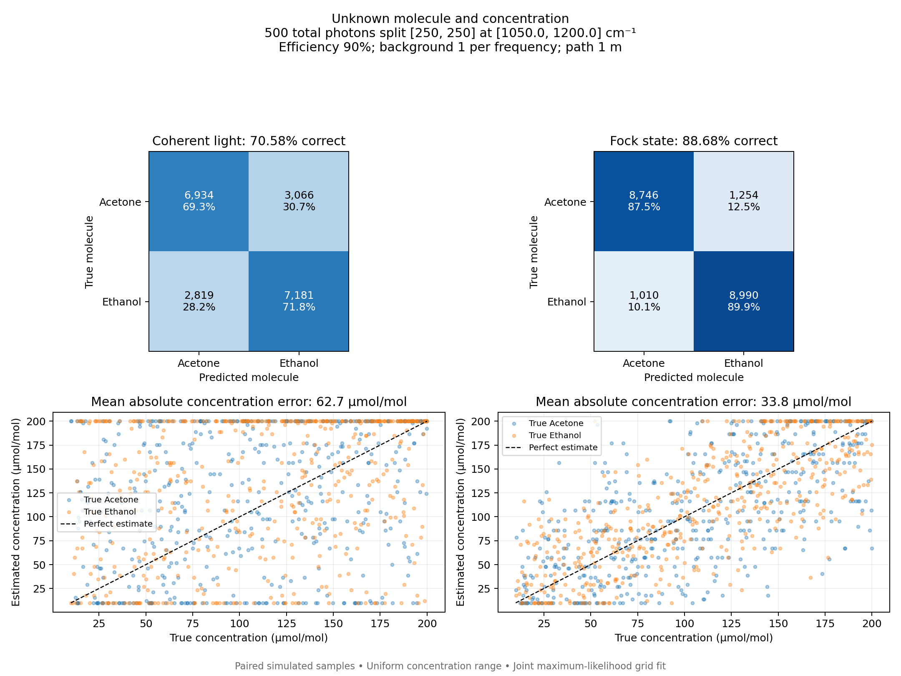
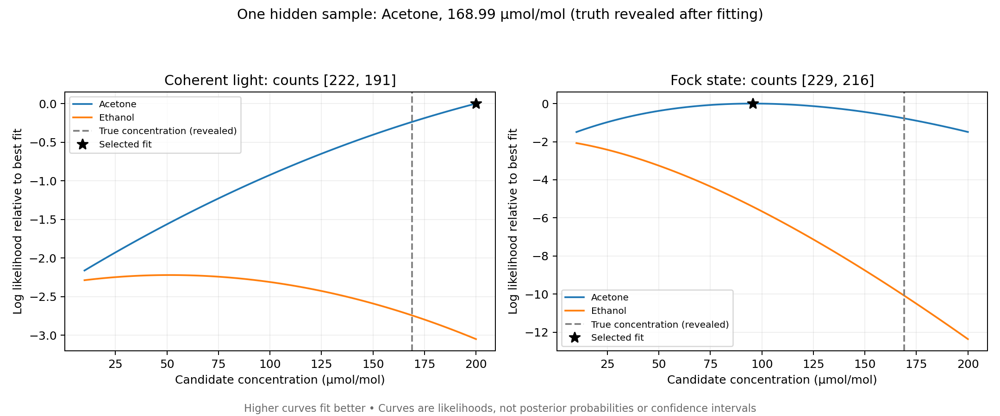

ASP QUANTUM · SIMULATION
Molecule identification
Seed 42 · 10,000 trials per molecule · Detector efficiency 90% · Background 1 recorded counts per frequency · Path length 1 m
Project brief — coherent and Fock relative entropy
Generic H0/H1 absorption hypotheses; perfect detection and zero background. D(P0 || P1) uses natural logarithms (nats). Independent measurements give total entropy mD. Evidence is accumulated for one unchanged H0 sample; positive values favour H0. Coherent counts are Poisson; Fock counts are binomial, at the same incident budget (mean for coherent, exact for Fock). Higher relative entropy means more expected information per measurement in this direction, not an accuracy percentage. Amplitude magnitudes apply only to coherent light; phase is unchanged.
| Quantity | Value |
|---|---|
| Transmissivities (H0, H1) | [0.95, 0.85] |
| Mean detected counts (H0, H1) | [475.0, 425.0] |
| Coherent relative entropy (nats) | 2.83218 |
| Fock relative entropy (nats) | 25.3669 |
| Input amplitude magnitude | 22.3607 |
| Output amplitude magnitudes (H0, H1) | [21.79449471770337, 20.615528128088304] |
Known concentration — single frequency
Concentration 100 µmol/mol is supplied to the classifier. Probe frequency: 1050 cm⁻¹. Photon budget: 500 per measurement.
| Probe | Simulated accuracy | Simulated error | Theoretical error |
|---|---|---|---|
| Coherent light | 72.58% | 27.43% | 26.92% |
| Fock state | 95.78% | 4.23% | 4.19% |
Unknown molecule and concentration — multiple frequencies
The classifier fits both identity and concentration. Frequencies: [1050.0, 1200.0] cm⁻¹; total photon budget 500 split as [250, 250]. True concentrations are drawn uniformly over [10.0, 200.0] µmol/mol.
| Probe | Identity accuracy | Concentration MAE (µmol/mol) | Boundary fits | Unidentifiable concentration |
|---|---|---|---|---|
| Coherent light | 70.58% | 62.70 | 44.16% | 0.00% |
| Fock state | 88.68% | 33.77 | 18.08% | 0.00% |
One hidden-sample example
Truth is revealed after fitting. An example can be worse than average.
| Probe | Recorded counts | Predicted molecule | Estimated concentration | True molecule | True concentration | Fit flags |
|---|---|---|---|---|---|---|
| Coherent light | [222, 191] | Acetone | 200.00 | Acetone | 168.99 | Concentration at range boundary |
| Fock state | [229, 216] | Acetone | 95.50 | Acetone | 168.99 | None |
How to interpret this run
- The brief baseline uses generic transmissivities, not molecular reference spectra. It always uses perfect detection and zero background; header detector settings apply to molecule experiments when present.
- These are simulated acetone-versus-ethanol samples, not independent laboratory measurements.
- Coherent photon budgets are means; Fock budgets are exact incident numbers. Source preparation is ideal.
- Detector efficiency, background and path length are known to the classifier. Concentration is hidden only in the unknown experiment.
- Concentration MAE includes wrong-molecule fits and excludes unidentifiable estimates. Boundary fits are constrained by the search range.
- Finite-trial accuracy can fluctuate. Zero observed mistakes do not establish zero theoretical error.
- Known- and unknown-concentration experiments differ in frequencies, sample concentrations and total background exposure; compare probes within each experiment.









